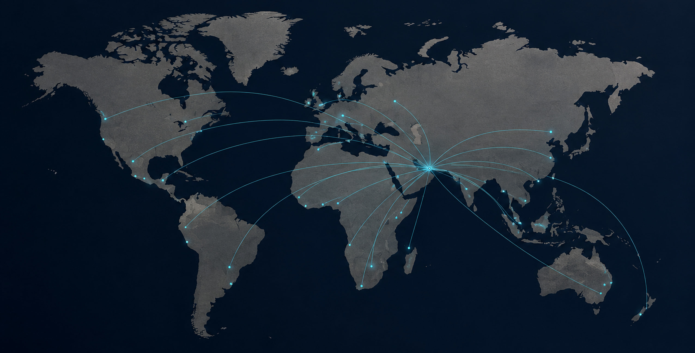
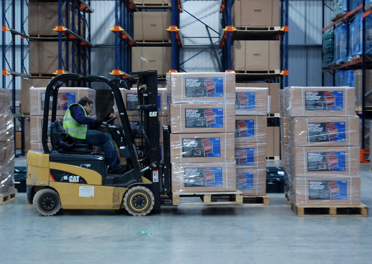
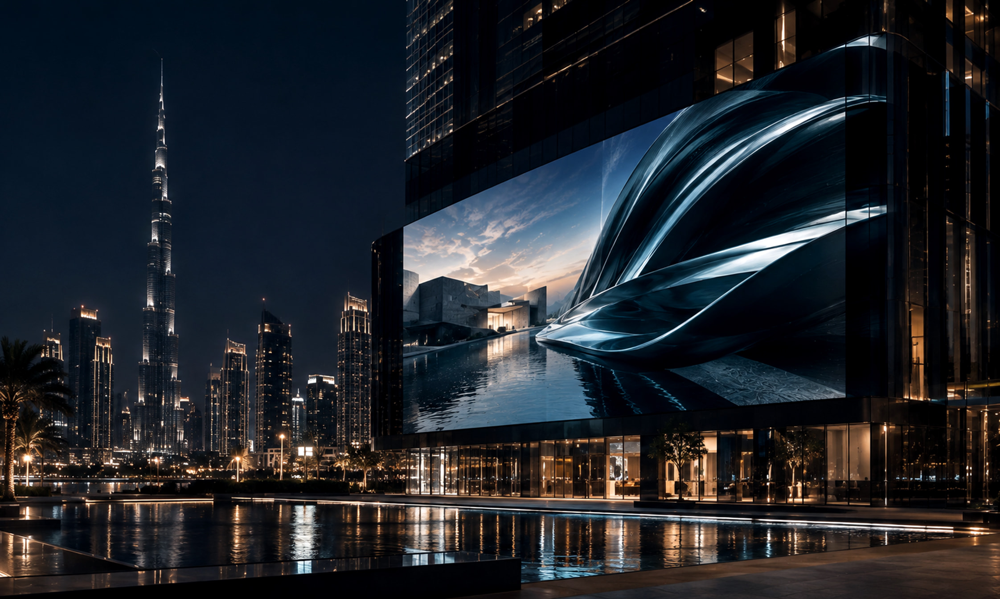
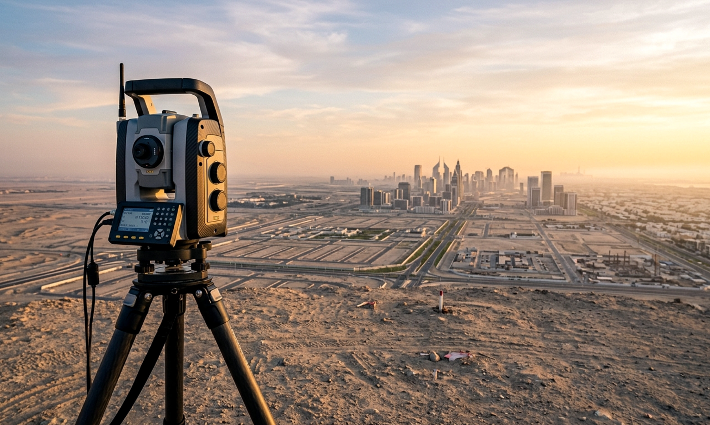
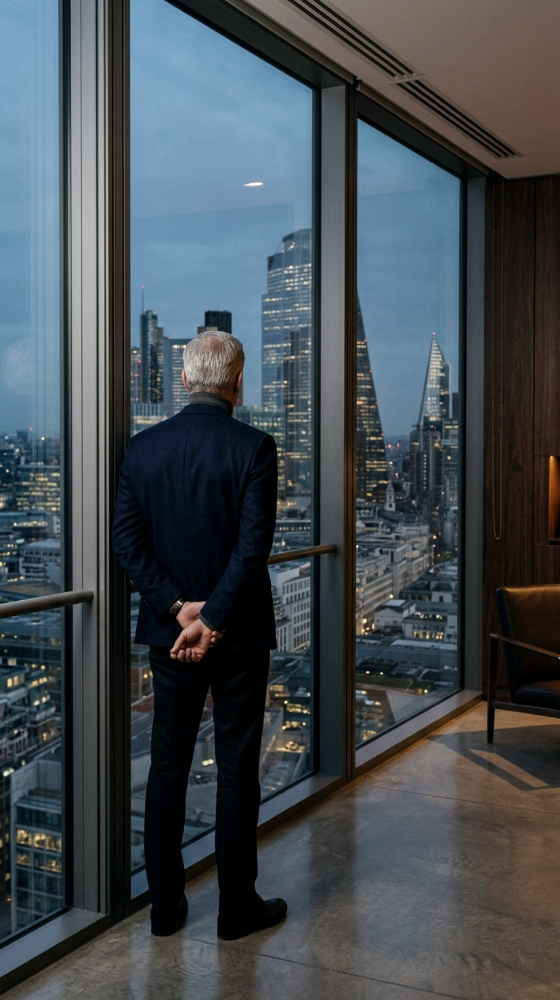

Bridging Trade, Technology & Innovation from the UAE.
01The World We Operate In
02The Ventures
03Global Connections
Dubai · United Arab Emirates
Imprint · Edition 01 · MMXXVI
Ten disciplines Nine markets One standard
Published by
BH Ventures FZE LLC
Address
Dubai, United Arab Emirates
Coordinates
25°12′N 55°16′E
Contact
info@bhventures.ae
Online
bhventures.ae
BH Ventures FZE LLC · 25°12′N 55°16′E02
BH Ventures FZE LLCEdition 01 · MMXXVI
Contents
01The Opening04
02The Company05
03The World We Operate In06
04The Ventures08
05The People Behind the Vision19
06The Way We Create Value20
07Global Connections21
08Proof22
09The Future23
10Let’s Build24
BH Ventures FZE LLC · 25°12′N 55°16′E03
01The OpeningDowntown Dubai · 25°12′N 55°16′E
Where trade meets technology, and ambition becomes architecture. This is BH Ventures.
From a single address in Dubai, BH Ventures trades vehicles and foodstuff, builds ventures in Web3 and AI, and moves capital across nine countries and counting. It is not one business — it is ten disciplines operating on one standard, built by a licensed free-zone company that treats ambition as infrastructure, not inspiration.
BH Ventures FZE LLC · The Opening04
02The Company
Who We Are
BH Ventures FZE LLC is a UAE-based, licensed free-zone company built around a simple conviction: opportunity has no single address.
What began as an international trading operation has grown into a portfolio of ventures spanning global trade, artificial intelligence, Web3, digital analytics, marketing, and market intelligence — unified not by industry, but by discipline.
The company operates as a builder of businesses rather than a single business itself: identifying high-potential markets, constructing ventures inside them, and connecting the partnerships that let those ventures scale. Every division — from automobile export to AI consultancy — is engineered to the same exacting standard, and answers to the same address in Dubai.
Ten disciplines. One standard.
BH Ventures FZE LLC · The Company05
03The World We Operate In
Where We Operate
BH Ventures runs on two kinds of presence: direct operations, and strategic partnership.

Direct Operations
United Arab Emirates25°12′N 55°16′E
Pakistan30°22′N 69°21′E
United Kingdom51°30′N 00°07′W
United States38°54′N 77°02′W
France48°51′N 02°21′E
Strategic Partnerships
Germany52°31′N 13°24′E
Estonia59°26′N 24°45′E
Denmark55°40′N 12°34′E
Ukraine50°27′N 30°31′E
Wider network
Saudi Arabia24°42′N 46°41′E
BH Ventures FZE LLC · The World We Operate In06
03The World We Operate In
Add Saudi Arabia to the wider network, and the footprint stretches across the Gulf, South Asia, Europe, and North America — nine markets and growing, each chosen for what it adds to the whole rather than for its size alone. Beyond direct geography, the company’s trading community reaches further still — a network built for traders across 150+ countries, proof that BH Ventures’ idea of “market” was never bound by borders in the first place.
9
Locations
5
Direct Operations
4
Strategic Partnerships
150+
Countries in Trading Network
BH Ventures FZE LLC · The World We Operate In07
04The Ventures
Ten Disciplines, One Address.
Trade. Web3. AI. Marketing. Nine services, one address — each engineered to the same exacting standard.
01New Automobile Trading (Export)09
02Foodstuff Trading10
03Web3 Venture Studio11
04Digital Analytics Services12
05Marketing via Social Media13
06Advertising14
07Marketing Management15
08AI Research & Consultancies16
09Surveying & Evaluating17
10Exhibition Organizing18
BH Ventures FZE LLC · The Ventures08
Global Trade01 / 10
01
New Automobile Trading (Export)
New vehicles on the quay · export by sea
Moving vehicles out of the UAE and into new markets, built on precision logistics and trusted export channels.
25°12′N 55°16′E
BH Ventures FZE LLC · The Ventures09
Global Trade02 / 10
02
Foodstuff Trading

Dates crated for export · Gulf supply chain
Import and export of foodstuff, dates above all, connecting supply chains across borders with reliability at scale.
25°12′N 55°16′E
BH Ventures FZE LLC · The Ventures10
Venture Building03 / 10
03
Web3 Venture Studio
The network layer · protocol infrastructure
From concept to launch, building decentralized ventures for a market still being defined.
25°12′N 55°16′E
BH Ventures FZE LLC · The Ventures11
Data & Insight04 / 10
04
Digital Analytics Services
Operations room · attribution in real time
Dashboards and attribution that turn scattered data into decisions.
25°12′N 55°16′E
BH Ventures FZE LLC · The Ventures12
Growth05 / 10
05
Marketing via Social Media
Content desk · a week of posts, planned
Strategy and amplification for brands that need to be seen, not just heard.
25°12′N 55°16′E
BH Ventures FZE LLC · The Ventures13
Growth06 / 10
06
Advertising

Facade screen · Downtown Dubai at night
Campaign strategy and execution built for reach and recall.
25°12′N 55°16′E
BH Ventures FZE LLC · The Ventures14
Growth07 / 10
07
Marketing Management
The planning table · a quarter, mapped
Strategy and growth, managed end to end.
25°12′N 55°16′E
BH Ventures FZE LLC · The Ventures15
Innovation08 / 10
08
AI Research & Consultancies
Research floor · machine and operator
An innovation practice exploring where artificial intelligence actually creates value.
25°12′N 55°16′E
BH Ventures FZE LLC · The Ventures16
Assessment09 / 10
09
Surveying & Evaluating

Total station on site · before capital moves
Ground-truth services that inform decisions before capital moves.
25°12′N 55°16′E
BH Ventures FZE LLC · The Ventures17
Experience10 / 10
10
Exhibition Organizing
Exhibition floor · the stands, open
From concept to on-site execution, building the moments where business happens in person.
25°12′N 55°16′E
BH Ventures FZE LLC · The Ventures18
05The People Behind the Vision
The People Behind the Vision
The atrium · 25°12′N 55°16′E
Behind every venture is a decision made by someone who chose to build rather than wait. BH Ventures is run by a small team of operators — traders, technologists, and market builders — who treat every new market the way an architect treats a blank site: with respect for what’s already there, and a plan for what isn’t yet.
We don’t enter markets.We build inside them.
BH Ventures FZE LLC · The People Behind the Vision19
06The Way We Create Value
Built for Global Growth
BH Ventures creates value through four disciplines, applied consistently across every venture:

The long view
01
Strategic Market Expansion
Identifying high-potential markets before they’re obvious, and building the on-ramps into them.
02
Diversified Business Ventures
Constructing and supporting businesses across trading, technology, digital solutions, and emerging industries — so growth in one discipline strengthens the others.
03
Technology-Driven Innovation
Applying AI, Web3, and modern digital infrastructure not as buzzwords, but as working tools inside every venture.
04
Trusted Global Partnerships
Treating every partner relationship as long-term infrastructure, not a transaction.
This is not diversification for its own sake — it’s a single operating model, applied to ten different disciplines.
BH Ventures FZE LLC · The Way We Create Value20
07Global Connections
Beyond Borders
The air corridor, after dark
Direct operations in the UAE, Pakistan, the UK, the US, and France give BH Ventures hands-on presence in five markets. Strategic partnerships in Germany, Estonia, Denmark, and Ukraine extend that reach into Europe’s trading and technology corridors. Together, they form a network built not for size, but for relevance — every connection chosen because it opens a door somewhere else.
A trading community trusted by traders across 150+ countries — real opportunities, structured access, without requiring traders to risk their own capital.
BH Ventures FZE LLC · Global Connections21
08Proof
Not Claims. Outcomes.
Numbers rarely tell the whole story, but they mark the distance travelled. A licensed free-zone company. Nine markets, five of them direct. Ten active ventures under one roof. A trading network built for a global community, not a local one.
09
Markets
05
Direct Operations
10
Active Ventures
150+
Countries in Network
Every number here is a marker, not a ceiling.
BH Ventures FZE LLC · Proof22
09The Future
The city at dusk · 25°12′N 55°16′E
What Comes Next
BH Ventures was never built to stay ten disciplines wide. Every venture added has followed the same test: does it open a market, sharpen a capability, or strengthen a partnership? The ones that pass, stay.
What’s next is more of the same discipline, applied further — deeper AI and Web3 capability, new trade corridors, and partnerships in markets not yet on the map. The company isn’t forecasting where global business is headed. It’s building the infrastructure to be there first.
We’re not predicting the next market.We’re building the road to it.
BH Ventures FZE LLC · The Future23
10Let’s Build
Let’s Build.
Every venture on these pages started as a conversation. If there’s a market you’re trying to enter, a business you’re trying to build, or a partnership you’re trying to form — this is where it starts.
 United Kingdom
51°30′N 00°07′W
United Kingdom
51°30′N 00°07′W
 United States
38°54′N 77°02′W
United States
38°54′N 77°02′W
 France
48°51′N 02°21′E
France
48°51′N 02°21′E
 Germany
52°31′N 13°24′E
Germany
52°31′N 13°24′E